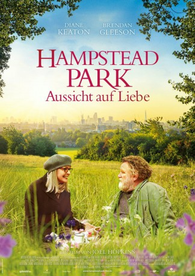

gesehen am 28.01.2018
gesehen am 28.01.2018Alternativ: Hampstead gesehen am 28.01.2018
 
 IMDB-Wertung: 5.9 / 10
IMDB-Wertung: 5.9 / 10  Metascore:
Metascore: 
Emily Walters hat ihr Leben immer schon eher ungewöhnlich gelebt, und findet ihr aktuelles Dasein im gediegenen Hampstead Heath eher fade. Als sie Zeugin wird, wie ein obdachloser Mann von ein paar Schlägern attackiert wird, greift sie ein. Schnell stellt sie fest, dass sie diesen verrückten Donald Horner faszinierend findet: Bereits seit 17 Jahren lebt er in einer Holzhütte in dem Park. Als sein Zuhause einem Bauprojekt weichen soll, macht sich Emily für ihn stark - und verliebt sich in Donald.
Jahr: 2017
Dauer: 102 Minuten
FSK:
Land: England Studio: Splendid FilmTonspuren: DTS - ,
Untertitel: Deutsch,
Auflösung: 1080p (1920x808) Größe: 7178 MB
Regisseur: Joel Hopkins
Drehbuch: Robert Festinger
Soundtrack: Stephen Warbeck
Darsteller:
 James Norton als Philip
James Norton als Philip Brendan Gleeson als Donald Horner
Brendan Gleeson als Donald Horner Diane Keaton als Emily Walters
Diane Keaton als Emily Walters Simon Callow als Judge
Simon Callow als Judge Lesley Manville als Fiona
Lesley Manville als Fiona Phil Davis als Fyfe
Phil Davis als Fyfe Adeel Akhtar als
Adeel Akhtar als  Hugh Skinner als Erik
Hugh Skinner als Erik Jason Watkins als James Smythe
Jason Watkins als James Smythe Alistair Petrie als Steve Crowley
Alistair Petrie als Steve Crowley Deborah Findlay als Mary Neal
Deborah Findlay als Mary Neal Jo Wheatley als Dog walker
Jo Wheatley als Dog walker Elizabeth Conboy als Posh lady
Elizabeth Conboy als Posh lady Peter Singh als Xaviar
Peter Singh als Xaviar Tina Simmons als Fiona's Friend (uncredited)
Tina Simmons als Fiona's Friend (uncredited) Stuart Whelan als Court Usher (uncredited)
Stuart Whelan als Court Usher (uncredited)Datei: X:\2017(G-M)\Hampstead Park - Aussicht auf Liebe (2017, FSK, 1920x808).mkv seit 24.01.2018
Festplatte: HD 2017(A-Z)-2018(A-F)
 Es gibt insgesamt 148 Filme in der Gruppe '2017(G-M)'
Es gibt insgesamt 148 Filme in der Gruppe '2017(G-M)'